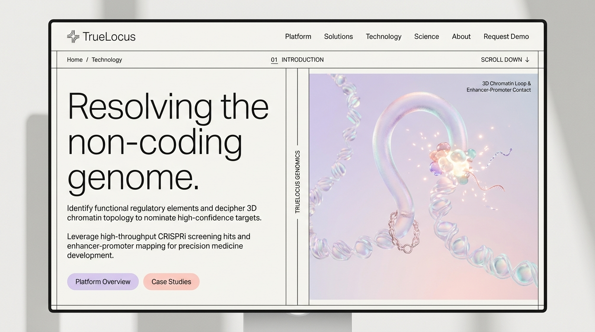

Resolving the non-coding genome.
Linear proximity is the default heuristic for non-coding target assignment, and the Broad ABC model sets the benchmark when Hi-C is available. TrueLocus operates where cell-type 3D data is absent, using sequence-derived contact decay and multi-promoter competition to nominate causal distal targets.

The Unresolved Regulatory Loop
High-throughput CRISPRi screens identify functional non-coding hits, but target gene assignment remains unresolved. Defaulting to the nearest transcription start site (TSS) fails when enhancers loop past proximal genes. In held-out CRISPRi validation sets (Schraivogel et al. 2020), the causal target was not the nearest gene in 45.8% of pairs (33/72).
Held-Out Empirical Benchmark
Evaluated on 72 experimental CRISPRi enhancer-gene pairs in K562 cells (Schraivogel et al. 2020, Nature Methods). Code was frozen and committed before evaluation.
| Method | Top-1 Accuracy | Top-3 Target Recall | Required Input Data |
|---|---|---|---|
| Nearest-TSS Baseline | 54.2% (39/72) | 73.6% (53/72) | 1D Distance |
| TrueLocus Engine | 69.4% (50/72) | 84.7% (61/72) | Sequence + CAGE (No Hi-C) |
| Broad ABC (Nasser 2021) | 75.0% (54/72) | 94.4% (68/72) | Full K562 Hi-C + ChIP + ATAC |
Statistical validation: TrueLocus vs Nearest Top-1 p=0.007 (McNemar exact test, b=13, c=2).
- Broad ABC Model (Nasser et al. 2021): When deeply sequenced cell-type Hi-C, ChIP-seq, and ATAC-seq are experimentally available, Broad ABC demonstrates outstanding performance (75.0% Top-1). It remains the benchmark standard for data-rich cell lines.
- Nearest-TSS Heuristic: An indispensable, zero-overhead baseline. In gene-dense regions where enhancers regulate their immediate adjacent promoter, 1D proximity reliably assigns 54.2% of targets.
- TrueLocus Engine: Engineered for screening hits in primary cells and disease models where experimental cell-type Hi-C is absent. By deriving 3D contact decay directly from sequence and resolving multi-promoter competition, TrueLocus lifts Top-3 recall on non-nearest loci to 70% (vs 42% for Nearest-TSS), correctly identifying the true distal target on 13 of 33 non-nearest loci.
Scope & Boundary Conditions
Clear operational boundaries for 3D computational target nomination:
- ✕ Coding Exon Hits: If your screening hits reside strictly within protein-coding exons, target assignment is already resolved.
- ✕ Gene Deserts: If a non-coding locus contains only one plausible promoter within 1 Mb, linear proximity is sufficient.
- ✓ Intended Scope: Complex, multi-promoter loci where distal enhancers risk looping past proximal genes.
Engagement Protocol
Inquiries & Contact
TrueLocus operates directly with functional genomics and screening teams. To evaluate candidate hits or request per-locus benchmark logs: